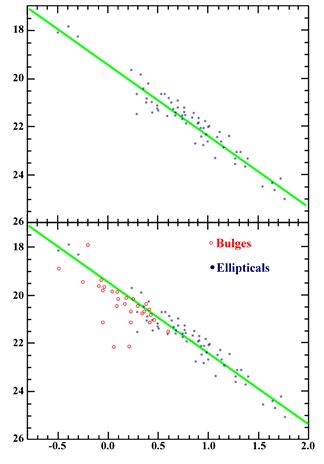

This study from Hamabe & Kormendy (1987) shows the Kormendy relation for a group of elliptical galaxies (top). The lower plot shows that the bulges of spiral galaxies (red points) exhibit a similar, but weaker, trend. The effective radius is plotted on the x-axis and the surface brightness at the effective radius plotted on the y-axis in these images.
The Kormendy relation (first reported by John Kormendy in his Ph.D. thesis of 1977) is a scaling relation observed between the effective radii of elliptical galaxies and their surface brightnesses at the effective radius. This is shown in the image on the left where the effective radius is plotted on the x-axis and the surface brightness at the effective radius plotted on the y-axis.
The relation indicates that at the effective radius, large (massive) galaxies are fainter than small galaxies. This in turn indicates that large galaxies are less dense than small galaxies – an important consideration for models of galaxy formation.